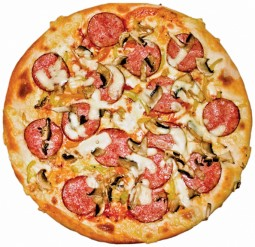

오늘날에 ‘피자’라고 불리는 음식은 기본적으로 소스가 발라진 둥근 밀가루 반죽에 치즈가 뿌려진 것을 말한다. 아마 이 간단함이 바로 피자를 세계에서 가장 잘 팔리는 음식으로 만든 비결일 것이다. 왜냐하면 대부분의 피자요리는 평평한 빵이나 밀가루 반죽 위에 오일, 야채, 고기를 얹은 것이기 때문이다.
고대 그리스인들은 플랑쿤토스(plankuntos)라는 동그란 밀가루 반죽 ‘접시’를 만들었다. 피자의 기원에 관한 가장 오래된 기록은 페르시아 다리우스 황제의 병사들이 그들의 방패에 구운 밀가루 반죽이다. 처음에는 페르시아 군인들이 치즈와 대추야자를 이 빵 위에 얹어 먹었는데, 시간이 지나면서 올리브 오일, 허브, 꿀, 잣, 염소치즈 등 다양한 음식을 빵 위에 얹어서 즐기기 시작했다. 오늘날 사람들에게 널리 알려진 것처럼 피자가 이탈리아 나폴리 지방의 토속음식이라는 증거는 서기 79년에 있었던 화산폭발의 현장에서 발견되었다. 이탈리아의 폼페이와 나폴리 일부 지역을 덮었던 화산폭발 현장에는 피자이올리(pizzaioli)들에 의해 운영되었던 오늘날 피자가게의 선구자격인 베이커리가 보존되어 있었다.
어떤 이유에서인지 분명하지는 않지만, 로마인들은 바삭거리는 크러스트(crust)를 선호한 반면, 나폴리 사람들은 질겅거리는 맛의 피자 크러스트를 완성시켰다. 이후에 ‘피자 마리나라’가 탄생할 때까지 신대륙에서 전해진 토마토와 피자를 결합시키기 위해 여러 가지 실험이 진행되면서 피자의 새로운 ‘맛’들이 만들어지고 있었다. 마리나라(marinara)는 ‘바다’라는 의미를 가지고 있기는 하지만, 사실 이 피자에서 바다와 관련된 맛은 찾을 수는 없다. 이 피자는 단순히 몇 주에 걸친 항해를 마치고 돌아온 선원이나 어부들이 좋아하는 간식이었을 뿐이다.
[네이버 지식백과] 피자 [Pizza] (1%를 위한 상식백과, 2014. 11. 15., 베탄 패트릭, 존 톰슨, 이루리)
 단호박의 달콤하고 담백한 맛과 아몬드의 고소한 맛을 느낄 수 있는 한국식 피자
단호박의 달콤하고 담백한 맛과 아몬드의 고소한 맛을 느낄 수 있는 한국식 피자